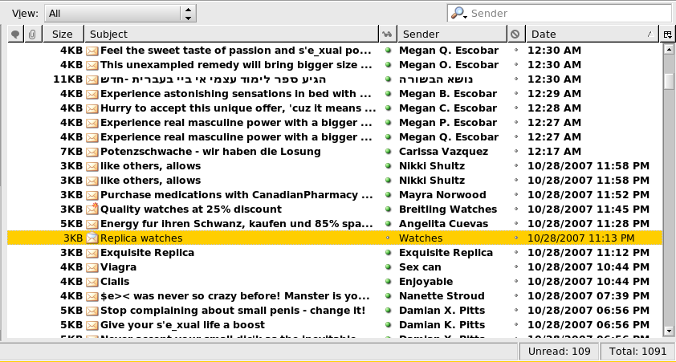

What are computer viruses?

Computer Viruses or any technology viruses are designed to spread from host to host and has the ability to replicate itself. Computer viruses cannot reproduce or spread without programming such as a document or a file. Viruses have the potentient to cause harm to your technology, such as harming the system software or destroying data. Some of the most dangerous technology viruses are the Morris worm, the Concept Virus, and the Storm worm. Below, it will explain as to what are the most dangerous types of computer viruses, how they work and what they can do to your computer if left untreated.
The Morris Worm

The Morris Worm was developed in 1998 by Robery Morris. It was one of the first computer worms that was pass out to the internet. He let out a worm that affected about ten percent of all the computer that were connect to the internet(during this time period there were estimated to be around sixty thousand computer). The worm slowed down all the computers to a halt, rendering them useless. This causes the internet to be shut down for several days to prevent it from spreading out. The Morris Worm was not program to damage computers, but to stop them from work.
Storm Worm

The Storm Worm was designed to be a Trojan Horse program that started to spread in 2006. It was an email that read out the words "230 dead as storm batters Europe". Those who were curious and open the email and the virus would infect their computers, causing the virus to act as a zombie or bot to spread the virus and sent the email in large amounts to others. The Storm Worm was picked up in more than two hundred emails by July 2007. If the computer is left untreated, it becomes more vunerable to be controlled remotely by the individual behind the virus attack.
Stuxnet
Stuxnet is an advanced computer worm that was designed to cause real-world physical effects from the infected PC. The computer worm was discovered in 2010 by the infosec community but the development behind it started around 2005.This computer worm is the scariest vuris because it was designed by government engineers within the United States with the purpose to block the development of nukes being built in Iran. Stuxnet did very little to no harm to the computer. it would instead see if the computer is connected to any programmable logic controllers, interact and alter it's programming which would result the nukes being damaged and destroying them in the process.